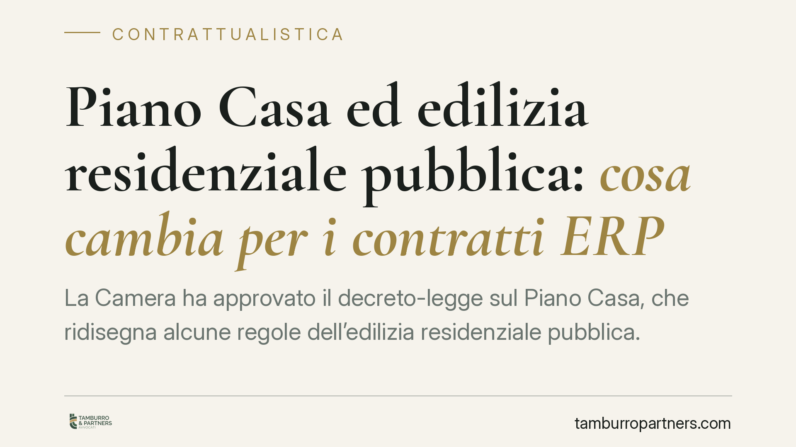

Piano Casa ed edilizia residenziale pubblica: cosa cambia per i contratti ERP
La Camera ha approvato il decreto-legge sul Piano Casa, che ridisegna alcune regole dell'edilizia residenziale pubblica. Le novità incidono su requisiti soggettivi, criteri di determinazione dei canoni e contenuto dei contratti ERP. Per chi redige o verifica atti, conviene comprendere subito portata ed effetti, anche in attesa della pubblicazione in Gazzetta Ufficiale e della conversione in legge.

Una premessa necessaria sulla fonte
Al momento in cui scriviamo, il provvedimento risulta approvato in un ramo del Parlamento ma non ancora pubblicato in via definitiva in Gazzetta Ufficiale. Il numero e la rubrica del decreto andranno verificati alla pubblicazione. Trattandosi di un decreto-legge, il testo è efficace dalla pubblicazione ma resta provvisorio fino alla conversione: ne consegue che il quadro qui descritto va riletto alla luce del testo definitivo e delle eventuali modifiche in sede di conversione.
Questa cautela non è un formalismo. Per chi opera su contratti ERP (edilizia residenziale pubblica), costruire clausole su un testo non consolidato espone a rischi di disallineamento.
Inquadramento normativo
La materia dell'edilizia residenziale pubblica si colloca oggi nell'alveo della competenza regionale. L'art. 117 della Costituzione devolve alle Regioni la disciplina dell'edilizia residenziale, con la conseguenza che molte fonti statali storiche hanno ormai rilievo residuale. È il caso del D.P.R. 30 dicembre 1972, n. 1035, a lungo riferimento per l'assegnazione e la gestione degli alloggi popolari: oggi conserva un valore essenzialmente storico, essendo la disciplina sostanziale assorbita dalle leggi regionali. Il legislatore statale interviene per principi e per profili che eccedono la dimensione locale.
Il decreto-legge in commento opera proprio su questo piano. Quanto alla sua natura, l'art. 77 Cost. fissa il regime tipico: efficacia immediata dalla pubblicazione, perdita di efficacia *ex tunc* in caso di mancata conversione entro sessanta giorni, e possibilità per le Camere di regolare con legge i rapporti giuridici sorti sulla base dei decreti non convertiti. In concreto, ciò significa che un contratto stipulato in vigenza del decreto potrebbe trovarsi privo del proprio fondamento normativo qualora la conversione non intervenga.
Cosa cambia sul piano sostanziale
Le novità annunciate toccano tre nuclei: i requisiti soggettivi per l'accesso e la permanenza negli alloggi, i criteri di valutazione e determinazione dei canoni, e il contenuto contrattuale dei rapporti di assegnazione.
Sul versante sostanziale, la revisione dei requisiti soggettivi incide sulla platea degli aventi diritto e sulle condizioni di decadenza. Per i contratti ERP già in essere, eventuali nuovi parametri reddituali o patrimoniali possono riflettersi su rinnovi e verifiche periodiche. La rideterminazione dei canoni, dal canto suo, agisce sulla prestazione economica e richiede di verificare la coerenza tra clausola contrattuale e nuovo criterio legale di calcolo.
Cosa cambia sul piano procedurale
Diverso, e da non confondere, è l'impatto procedurale. Qui rileva il coordinamento tra fonte statale e attuazione regionale: i tempi di recepimento, gli adempimenti degli enti gestori e la modulistica. Un atto formalmente corretto rispetto al decreto potrebbe risultare incompleto se non integrato con le procedure regionali di assegnazione e controllo.
Per notai e avvocati, l'attenzione si sposta dunque su due livelli distinti: la conformità del contenuto (profilo sostanziale) e la regolarità del procedimento a monte dell'atto (profilo procedurale). Tenerli separati aiuta a isolare i punti di rischio.
Cosa fare in concreto
- Verificate la fonte alla pubblicazione: controllate numero, data e testo definitivo in Gazzetta Ufficiale prima di richiamare il decreto negli atti.
- Inserite clausole di adeguamento normativo: prevedete che canoni e condizioni si adeguino automaticamente all'esito della conversione e alla normativa regionale di attuazione, evitando rinvii statici a un testo provvisorio.
- Coordinatevi con la disciplina regionale: prima di redigere o validare un contratto ERP, riscontrate la legge regionale competente e gli atti dell'ente gestore.
- Mappate i rapporti pendenti: individuate i contratti stipulati in vigenza del decreto e predisponete una gestione del rischio di mancata conversione, anche con clausole di salvaguardia.
- Documentate la verifica dei requisiti: aggiornate i controlli su requisiti soggettivi e canoni secondo i nuovi parametri, conservando traccia delle verifiche svolte.
La raccomandazione di fondo è prudenziale: lavorare su un decreto-legge significa operare su un quadro in movimento. Consigliamo di rivedere gli atti dopo la conversione e di mantenere il coordinamento con la fonte regionale come passaggio non eludibile.
---
Contributo informativo a cura di Tamburro & Partners Avvocati - Avv. Giuseppe Tamburro. Non costituisce parere legale.
Ogni contratto ha il suo equilibrio.
Se vuoi una revisione delle clausole o una redazione su misura, scrivi allo studio. Ti rispondiamo entro un giorno lavorativo.